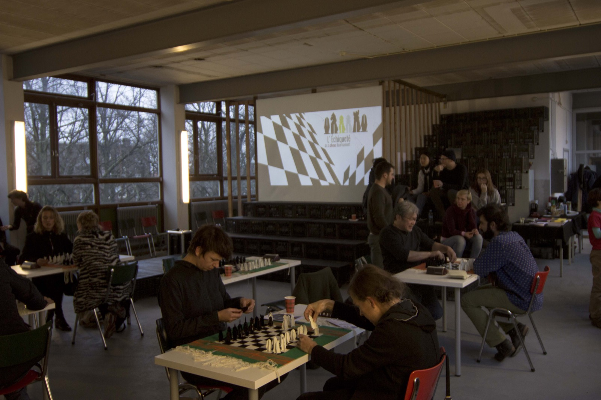
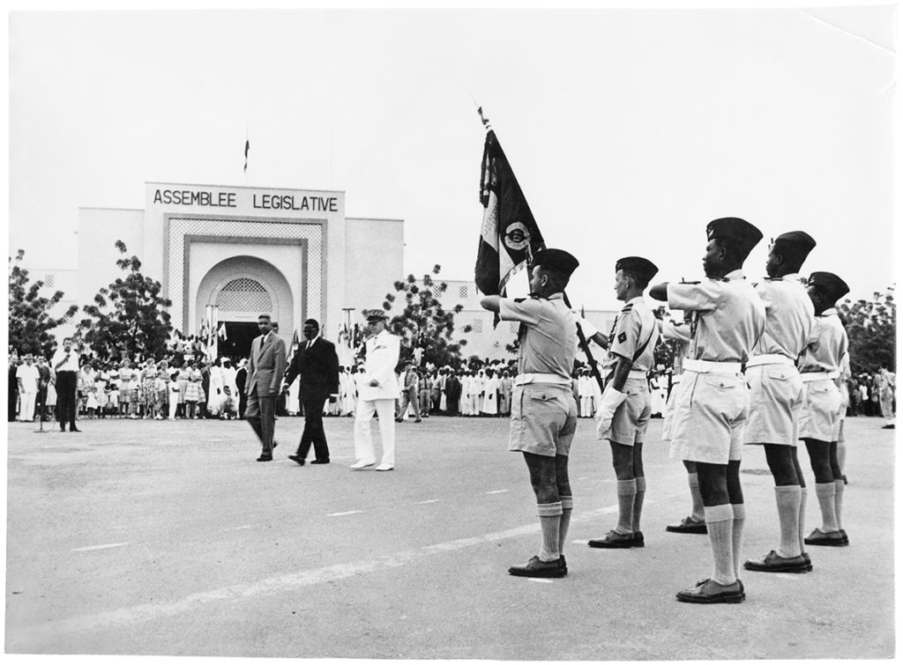
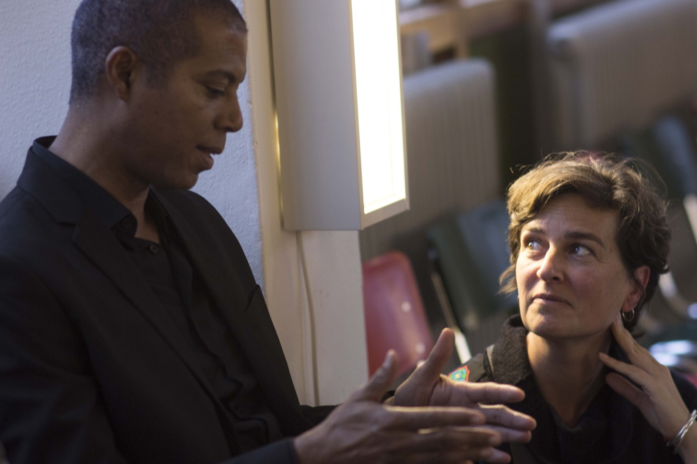
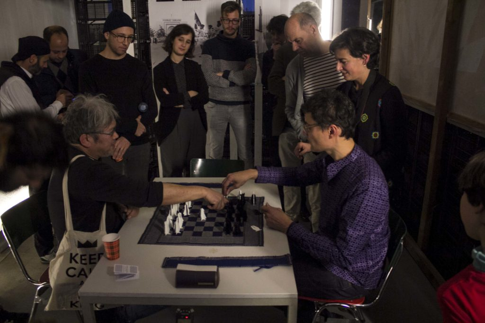
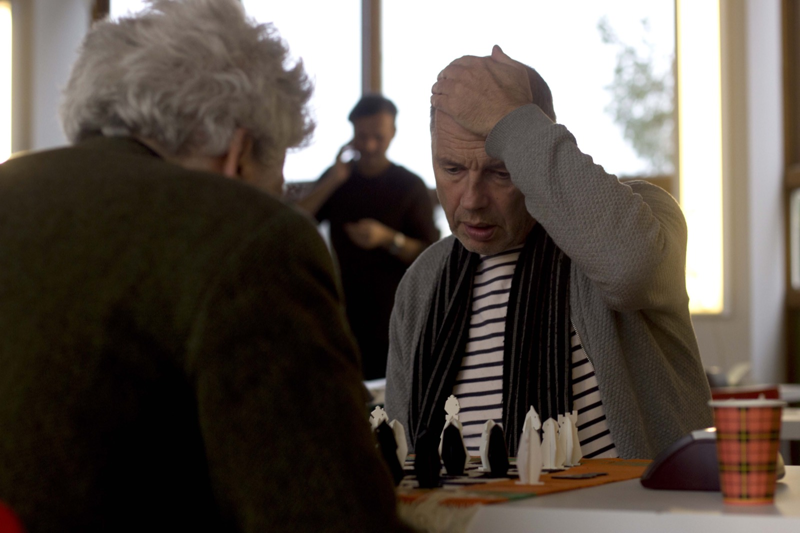

Through the tournament, we dived into "L'Échiqueté," a trickered version of the chess game created by French artists duo Olive Martin & Patrick Bernier.
Find here a booklet that includes the history and rules of "L'Échiqueté," as well as the programme of the tournament, both in English and Dutch.
"L'Échiqueté" was inspired by a photograph from the Bernier family archives depicting a ceremony celebrating the constitution of Niger’s Armed Forces and the commemoration of the first anniversary of the Republic of Niger in 1961. This event followed the signing, a few months earlier, of a defence agreement between France and what are now Burkina-Faso and Benin. The agreement stipulated that the French republic would provide material aid and would also allocate troops to help these countries to form their own national armies. In exchange, France would be granted free access to military infrastructures and – in an annex that remained a state secret for years – privileged access to strategic resources such as oil, gas, and uranium.

The martial configuration of the scene, the distribution of elements within it, as well as the black-and-white attire of the key protagonists, have here been translated into a chessboard diagram and a variation of chess called “L’Échiqueté,” or checkered chess. The rules are the same as for traditional chess. But the artists introduce a new rule, which completely turns the “black-and-white” dichotomy of chess on its head: when a piece is captured, it merges with that of its captor, thus producing a new, black and white “checkered” piece.
The players are forced to reconsider the original tactics of the game: how, for example, to deal with a situation in which it is not possible to capture a menacing piece because it belongs to us as well as to our opponent. Or what to think of the fact that in the course of the game, a third player, as an independent opponent, may take charge of the checkered pieces, as the pieces do not really belong to anyone. The work is a clever détournement of traditional oppositional game strategy as well as a sophisticated metaphor on identity politics and related issues of métissage, or intermixing, hybridity, and alterity. It challenges a polarized view of the world as “black and white” and suggests a different way of negotiating opposition.

Left: Antoin Deul. Right: Olive Martin. Photo: Winston Nanlohy
In the conspiracy room. On the right: Patrick Bernier and Olive Martin. On the left: King Wullur. Photo: Winston Nanlohy
Photo: Winston Nanlohy